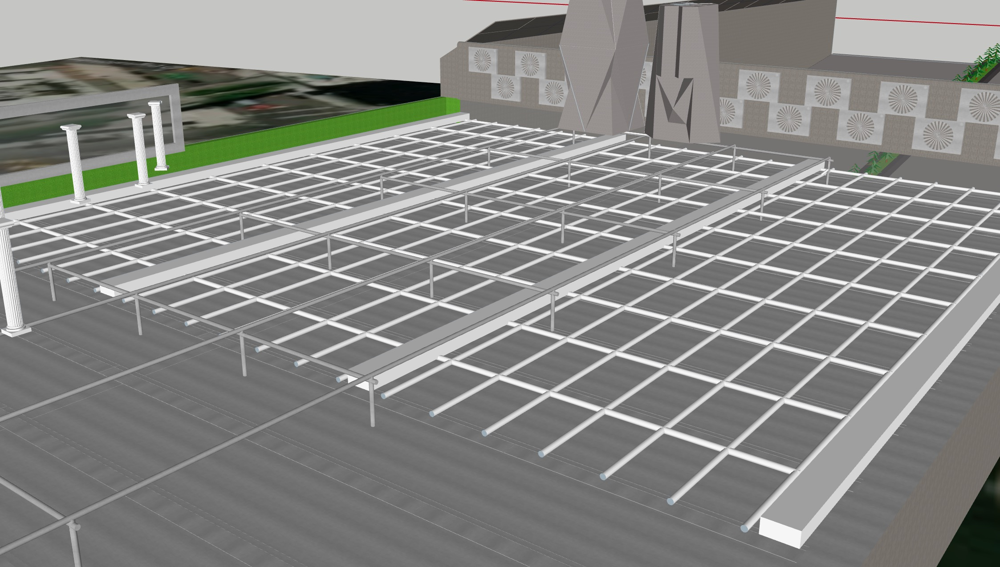
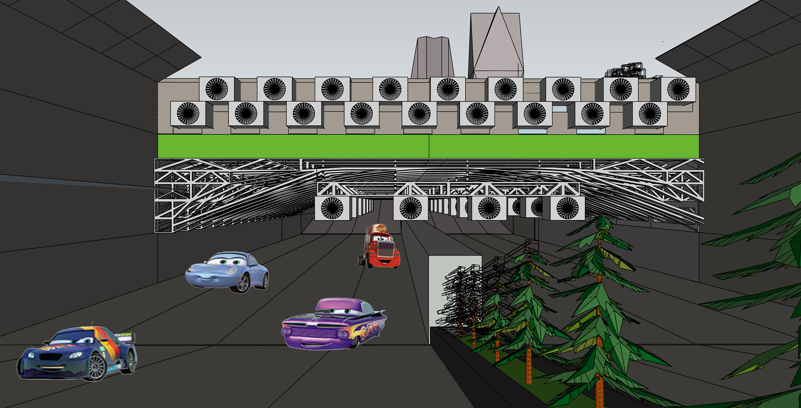
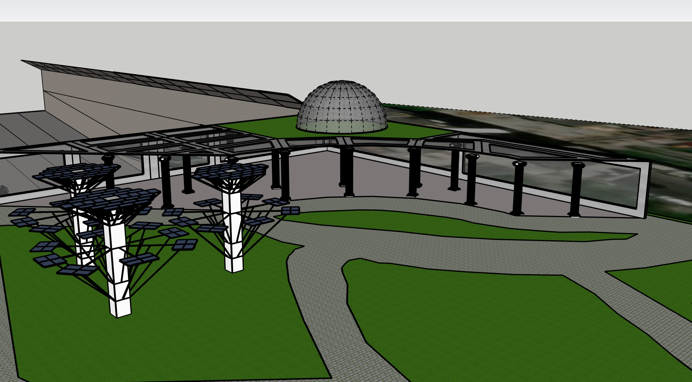
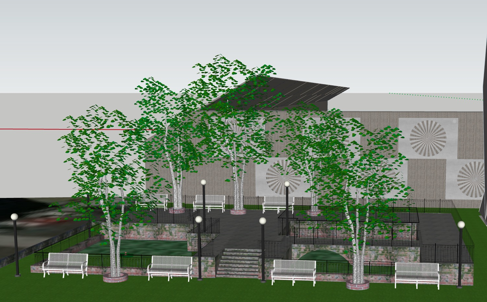
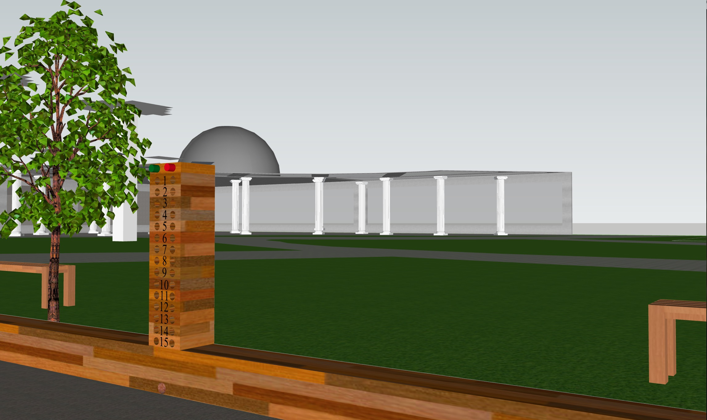
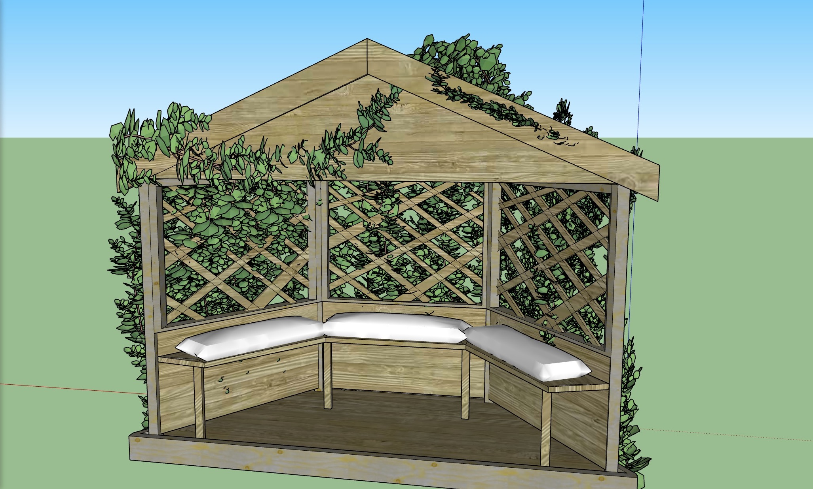

At BalcoNY, there's no such thing as ‘just passing through.’ Our project functions as an architectural structure that positively impacts the environment and improves residential access to greenery. Form and function are paramount to our design, as we create a “stealth” green structure that enhances the wellbeing of the Chelsea community and accounts for financial practicality. We designed our amenities with the intention of furthering the wellbeing of the Chelsea community in a space that endorses a healthy lifestyle.

Carbon Sequestering System
BalcoNY acts as a prototype for future carbon sequestration on a commercial scale. By sequestering carbon in a park created by an underpass, we hope to inspire others to think about sequestering carbon in creative ways. Here, the carbon sequestration process itself will run on gray water. This water will be pumped through the foundation of the park before absorbing the carbon the vacuums ‘inhale’. In an effort to offset our energy consumption, the road will harness kinetic energy and provide partial power to the machines. Additional Helmholtz Resonators will be placed along the barricade wall which will generate additional power based on piezoelectric conductivity principles (vibrations).

Underpass
The underpass will be used to impliment our large HVAC air purifying system. A bevy of Co2 filters will be stacked upon the underpass ceiling. Essencially, the filters work like large vacuums, sucking in polluted air from the traffic below. Then, our Carbon Sequestering System treats pollusion and emits the clean air out into the world!
All BalcoNY walls have been designated as canvases for the modern art community to showcase their newest pieces of graffiti art. These walls provide an “Instagram-able” aspect to BalcoNY, thereby appealing to millennials. Our Graffiti Wall will also host monthly Art Exhibitions to promote the work of local artists. The wall also serves as a blockage in the case of a flood or natural disaster.
Rock Climbing Wall
Sequestered carbon from the HVAC system can be reused as a fuel catalyst or simply stored safely with no danger. At BalcoNY that was too standard, we want people to interact with our process in order to catalyze climate change discussions. For this reason we have made our sequestered carbon tanks into climbing walls. The vertical integration helps relieve the load on the HVAC System while the physical action of climbing on carbon is a way to get any one old enough to climb interested in the process.

Treepods
Throughout the park, we have placed treepods with numerous carbon-capturing technologies consolidate bioenergy with CO2 capture and storage. These artificial trees suck excess carbon from the air through their perforations in the canopies.

Zen Excersize Garden
Our Zen Excersize Garden (or ZEG) will prove a worthy destination for 'employees to get out and take a nice lunch'. To compliment the ample folliage and serene environment, the ZEG will also implement trampolines, stationary bikes build to harness and convert kinectic energy, and jungle-gyms. At BalcoNY, we believe in pushing the envelope, and for those who beleive that zen and trampolines are "incohesive", there is a lovely park accross the street that does not have trampolines.

Bocce Ball Court
Our park is furnashed with a Bocce Ball Court. In doing so, we hope to draw in the 37 people in the New York City area that have heard of Bocce Ball. Balco Executive Eli Kapsak will be moving his office to the Bocce Ball Court to teach people how to play.
For a head-start, click the Youtube tutorial video link below:
https://www.youtube.com/watch?v=v3slD-qDIW8
Our climate-controlled Greenhouse is powered by solar and VTT energy, and is designed first and foremost as a communal space for the general public. The structure will host all kinds of wild life, and visitors will be able to plant and harvest should they so choose. During the on-season, the garden will be open at all times, and the Greenhouse will host a weekly Sunday Farmers Market.

Relaxing Areas
Our top of the line relaxtion areas are perfect for escaping the chaos of our Zen Excersize Garden (or ZEG). Each area is connected by an interwoven stream of running water and water stones. Each area is lined with wubbles (yes, wubbles) and also includes a center table. not present in the image. Furthermore, these area's will be lit with with the energy ammassed by our Co2 Filters. Using the Helmholtz Resonators, each area can be lit with only 30mW.